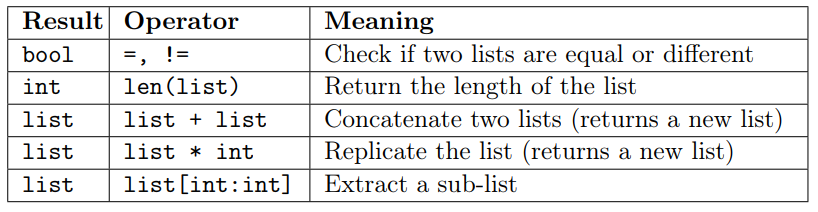
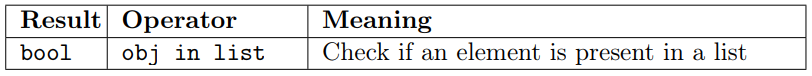
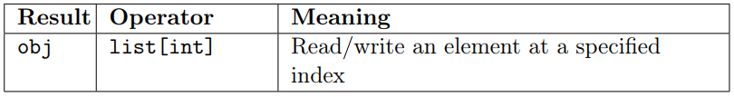
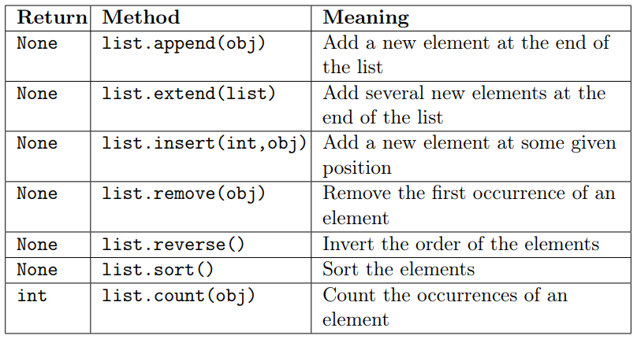
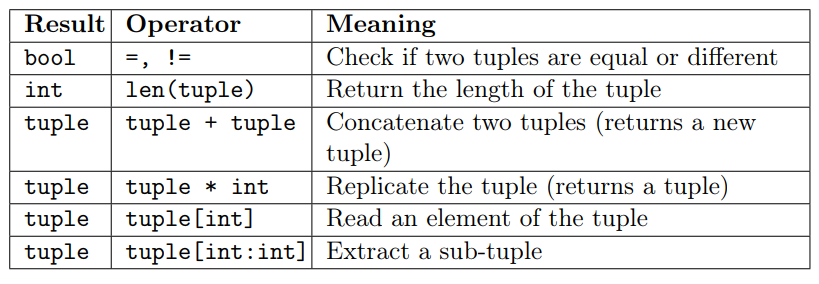
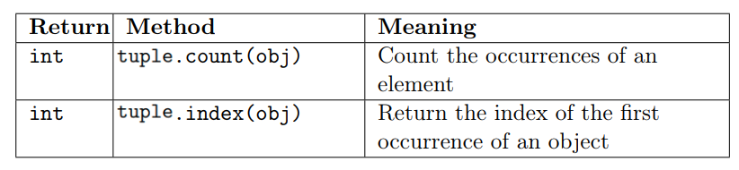

Module 1, Practical 3¶
In this practical we will work with lists and tuples.
Lists¶
Python lists are ordered collections of (homogeneous) objects, but they can hold also non-homogeneous data. List are mutable objects. Elements of the collection are specified within two square brackets [] and are comma separated.
We can use the function print to print the content of lists. Some examples of list definitions follow:
[1]:
my_first_list = [1,2,3]
print("first:" , my_first_list)
my_second_list = [1,2,3,1,3] #elements can appear several times
print("second: ", my_second_list)
fruits = ["apple", "pear", "peach", "strawberry", "cherry"] #elements can be strings
print("fruits:", fruits)
an_empty_list = []
print("empty:" , an_empty_list)
another_empty_list = list()
print("another empty:", another_empty_list)
a_list_containing_other_lists = [[1,2], [3,4,5,6]] #elements can be other lists
print("list of lists:", a_list_containing_other_lists)
my_final_example = [my_first_list, a_list_containing_other_lists]
print("a list of lists of lists:", my_final_example)
first: [1, 2, 3]
second: [1, 2, 3, 1, 3]
fruits: ['apple', 'pear', 'peach', 'strawberry', 'cherry']
empty: []
another empty: []
list of lists: [[1, 2], [3, 4, 5, 6]]
a list of lists of lists: [[1, 2, 3], [[1, 2], [3, 4, 5, 6]]]
Operators for lists¶
Python provides several operators to handle lists. The following operators behave like on strings (remember that, as in strings, the first position is 0!):
While this in operator requires that the whole tested obj is present in the list
and
can also change the corresponding value of the list (lists are mutable objects).
Let’s see some examples.
[2]:
A = [1, 2, 3 ]
B = [1, 2, 3, 1, 2]
print("A is a ", type(A))
print(A, " has length: ", len(A))
print("A[0]: ", A[0], " A[1]:", A[1], " A[-1]:", A[-1])
print(B, " has length: ", len(B))
print("Is A equal to B?", A == B)
C = A + [1, 2]
print(C)
print("Is C equal to B?", B == C) #same content
print("Is C the same object as B?", B is C) #different objects
D = [1, 2, 3]*8
print(D)
E = D[12:18] #slicing
print(E)
print("Is A*2 equal to E?", A*2 == E)
A is a <class 'list'>
[1, 2, 3] has length: 3
A[0]: 1 A[1]: 2 A[-1]: 3
[1, 2, 3, 1, 2] has length: 5
Is A equal to B? False
[1, 2, 3, 1, 2]
Is C equal to B? True
Is C the same object as B? False
[1, 2, 3, 1, 2, 3, 1, 2, 3, 1, 2, 3, 1, 2, 3, 1, 2, 3, 1, 2, 3, 1, 2, 3]
[1, 2, 3, 1, 2, 3]
Is A*2 equal to E? True
[3]:
A = [1, 2, 3, 4, 5, 6]
B = [1, 3, 5]
print("A:", A)
print("B:", B)
print("Is B in A?", B in A)
print("A\'s ID:", id(A))
A[5] = [1,3,5] #we can add elements
print(A)
print("A\'s ID:", id(A)) #same as before! why?
print("A has length:", len(A))
print("Is now B in A?", B in A)
A: [1, 2, 3, 4, 5, 6]
B: [1, 3, 5]
Is B in A? False
A's ID: 140661389830592
[1, 2, 3, 4, 5, [1, 3, 5]]
A's ID: 140661389830592
A has length: 6
Is now B in A? True
Note: When indexing, do not exceed the list boundaries (or you will be prompted a list index out of range error).
Consider the following example:
[4]:
A = [1, 2, 3, 4, 5, 6]
print("A has length:", len(A))
print("First element:", A[0])
print("7th-element: ", A[6])
A has length: 6
First element: 1
---------------------------------------------------------------------------
IndexError Traceback (most recent call last)
Input In [4], in <cell line: 5>()
2 print("A has length:", len(A))
4 print("First element:", A[0])
----> 5 print("7th-element: ", A[6])
IndexError: list index out of range
It is actually fine to exceed boundaries with slicing instead:
[5]:
A = [1, 2, 3, 4, 5, 6]
print("A has length:", len(A))
print("First element:", A[0])
print("last element: ", A[-1])
print("3rd to 10th: ", A[2:10])
print("8th to 11th:", A[7:11])
A has length: 6
First element: 1
last element: 6
3rd to 10th: [3, 4, 5, 6]
8th to 11th: []
let’s try
Create an empyt list and verify that its lenght is equal to 0.
Create a list with the first five non negative integer (1,2,3,4,5) using range().
Create a list with 100 elements equal to 0.
Given
lista = [0.0, "b", [3], [4, 5]]
try a) the length of the list. b) the type of the first element of the list. c) the lenght of the second element of the list. d) the lenght of the 3th element of the list. e) lenght of the last element of the list. f) Does the list contains the value “b” (use in). g) does the list contains the value 4?
Consider the matrix \(M = \begin{bmatrix}1 & 2 & 3\\ 1 & 2 & 1\\ 1 & 1 & 3\end{bmatrix}\) and the vector \(v=[10, 5, 10]^T\). What is the matrix-vector product \(M*v\)?
\[\begin{split}\begin{bmatrix}1 & 2 & 3\\ 1 & 2 & 1\\ 1 & 1 & 3\end{bmatrix}*[10,5,10]^T = [50, 30, 45]^T\end{split}\]
[6]:
M = [[1, 2, 3], [1, 2, 1], [1, 1, 3]]
v = [10, 5, 10]
prod = [0, 0 ,0] #at the beginning the product is the null vector
prod[0]=M[0][0]*v[0] + M[0][1]*v[1] + M[0][2]*v[2]
prod[1]=M[1][0]*v[0] + M[1][1]*v[1] + M[1][2]*v[2]
prod[2]=M[2][0]*v[0] + M[2][1]*v[1] + M[2][2]*v[2]
print("M: ", M)
print("v: ", v)
print("M*v: ", prod)
M: [[1, 2, 3], [1, 2, 1], [1, 1, 3]]
v: [10, 5, 10]
M*v: [50, 30, 45]
Methods of the class list¶
The class list has some methods that can be used to operate on it. Recall from the lecture the following methods:
Note: Lists are mutable objects and therefore virtually all the previous methods (except count) do not have an output value, but they modify the list.
Some usage examples follow:
[7]:
#A numeric list
A = [1, 2, 3]
print(A)
print("A has id:", id(A))
A.append(72) #appends one and only one object
print(A)
print("A has id:", id(A))
A.extend([1, 5, 124, 99]) #adds all these objects, one after the other.
print(A)
A.reverse() #NOTE: NO RETURN VALUE!!!
print(A)
A.sort()
print(A)
print("Min value: ", A[0]) # In this simple case, could have used min(A)
print("Max value: ", A[-1]) #In this simple case, could have used max(A)
print("Number 1 appears:", A.count(1), " times")
print("While number 837: ", A.count(837))
print("\nDone with numbers, let's go strings...\n")
#A string list
fruits = ["apple", "banana", "pineapple", "cherry","pear", "almond", "orange"]
#Let's get a reverse lexicographic order:
print(fruits)
fruits.sort()
fruits.reverse() # equivalent to: fruits.sort(reverse=True)
print(fruits)
fruits.remove("banana")
print(fruits)
fruits.insert(5, "wild apple") #put wild apple after apple.
print(fruits)
print("\nSorted fruits:")
fruits.sort() # does not return anything. Modifies list!
print(fruits)
[1, 2, 3]
A has id: 140661389498624
[1, 2, 3, 72]
A has id: 140661389498624
[1, 2, 3, 72, 1, 5, 124, 99]
[99, 124, 5, 1, 72, 3, 2, 1]
[1, 1, 2, 3, 5, 72, 99, 124]
Min value: 1
Max value: 124
Number 1 appears: 2 times
While number 837: 0
Done with numbers, let's go strings...
['apple', 'banana', 'pineapple', 'cherry', 'pear', 'almond', 'orange']
['pineapple', 'pear', 'orange', 'cherry', 'banana', 'apple', 'almond']
['pineapple', 'pear', 'orange', 'cherry', 'apple', 'almond']
['pineapple', 'pear', 'orange', 'cherry', 'apple', 'wild apple', 'almond']
Sorted fruits:
['almond', 'apple', 'cherry', 'orange', 'pear', 'pineapple', 'wild apple']
An important thing to remember that we mentioned already a couple of times is that lists are mutable objects and therefore virtually all the previous methods (except count) do not have an output value:
[8]:
A = ["A", "B", "C"]
print("A:", A)
A_new = A.append("D")
print("A:", A)
print("A_new:", A_new)
#A_new is None. We cannot apply methods to it...
print(A_new is None)
print("A_new has " , A_new.count("D"), " Ds")
A: ['A', 'B', 'C']
A: ['A', 'B', 'C', 'D']
A_new: None
True
---------------------------------------------------------------------------
AttributeError Traceback (most recent call last)
Input In [8], in <cell line: 13>()
11 #A_new is None. We cannot apply methods to it...
12 print(A_new is None)
---> 13 print("A_new has " , A_new.count("D"), " Ds")
AttributeError: 'NoneType' object has no attribute 'count'
Some things to remember
append and extend work quite differently:
[9]:
A = [1, 2, 3]
A.extend([4, 5])
print(A)
B = [1, 2, 3]
B.append([4,5])
print(B)
[1, 2, 3, 4, 5]
[1, 2, 3, [4, 5]]
To remove an object it must exist:
[10]:
A = [1,2,3, [[4],[5,6]], 8]
print(A)
A.remove(2)
print(A)
A.remove([[4],[5,6]])
print(A)
A.remove(7)
[1, 2, 3, [[4], [5, 6]], 8]
[1, 3, [[4], [5, 6]], 8]
[1, 3, 8]
---------------------------------------------------------------------------
ValueError Traceback (most recent call last)
Input In [10], in <cell line: 7>()
5 A.remove([[4],[5,6]])
6 print(A)
----> 7 A.remove(7)
ValueError: list.remove(x): x not in list
To sort a list, its elements must be sortable (i.e. homogeneous)!
[11]:
A = [4,3, 1,7, 2]
print("A:", A)
A.sort()
print("A sorted:", A)
A.append("banana")
print("A:", A)
A.sort()
print("A:", A)
A: [4, 3, 1, 7, 2]
A sorted: [1, 2, 3, 4, 7]
A: [1, 2, 3, 4, 7, 'banana']
---------------------------------------------------------------------------
TypeError Traceback (most recent call last)
Input In [11], in <cell line: 7>()
5 A.append("banana")
6 print("A:", A)
----> 7 A.sort()
8 print("A:", A)
TypeError: '<' not supported between instances of 'str' and 'int'
Important to remember:
Lists are mutable objects and this has some consequences! Since lists are mutable objects, they hold references to objects rather than objects.
Take a look at the following examples:
[12]:
l1 = [1, 2]
l2 = [4, 3]
LL = [l1, l2]
print("l1:", l1)
print("l2:",l2)
print("LL:", LL)
l1.append(7)
print("\nAppending 7 to l1...")
print("l1:", l1)
print("LL now: ", LL)
LL[0][1] = -1
print("\nSetting LL[0][1]=-1...")
print("LL now:" , LL)
print("l1 now", l1)
#but the list can point also to a different object,
#without affecting the original list.
LL[0] = 100
print("\nSetting LL[0] = 100")
print("LL now:", LL)
print("l1 now", l1)
l1: [1, 2]
l2: [4, 3]
LL: [[1, 2], [4, 3]]
Appending 7 to l1...
l1: [1, 2, 7]
LL now: [[1, 2, 7], [4, 3]]
Setting LL[0][1]=-1...
LL now: [[1, -1, 7], [4, 3]]
l1 now [1, -1, 7]
Setting LL[0] = 100
LL now: [100, [4, 3]]
l1 now [1, -1, 7]
Making copies
There are several ways to copy a list into another. Let’s see the difference between = and [:]. Note what happens when lists get complicated.
[13]:
A = ["hi", "there"]
B = A
print("A:", A)
print("B:", B)
A.extend(["from", "python"])
print("A now: ", A)
print("B now: ", B)
print("\n---- copy example -------")
#Let's make a distinct copy of A.
C = A[:] #all the elements of A have been copied in C
print("C:", C)
A[3] = "java"
print("A now:", A)
print("C now:", C)
print("\n---- be careful though -------")
#Watch out though that this is a shallow copy...
D = [A, A]
E = D[:]
print("D:", D)
print("E:", E)
D[0][0] = "hello"
print("\nD now:", D)
print("E now:", E)
print("A now:", A)
A: ['hi', 'there']
B: ['hi', 'there']
A now: ['hi', 'there', 'from', 'python']
B now: ['hi', 'there', 'from', 'python']
---- copy example -------
C: ['hi', 'there', 'from', 'python']
A now: ['hi', 'there', 'from', 'java']
C now: ['hi', 'there', 'from', 'python']
---- be careful though -------
D: [['hi', 'there', 'from', 'java'], ['hi', 'there', 'from', 'java']]
E: [['hi', 'there', 'from', 'java'], ['hi', 'there', 'from', 'java']]
D now: [['hello', 'there', 'from', 'java'], ['hello', 'there', 'from', 'java']]
E now: [['hello', 'there', 'from', 'java'], ['hello', 'there', 'from', 'java']]
A now: ['hello', 'there', 'from', 'java']
Equality and identity
Two different operators exist to check the equality of two lists (==) and the identity of two lists (is).
[14]:
A = [1, 2, 3]
B = A
C = [1, 2, 3]
print("Is A equal to B?", A == B)
print("Is A actually B?", A is B)
print("Is A equal to C?", A == C)
print("Is A actually C?", A is C)
#in fact:
print("\nA's id:", id(A))
print("B's id:", id(B))
print("C's id:", id(C))
#just to confirm that:
A.append(4)
B.append(5)
print("\nA now: ", A)
print("B now: ", B)
print("C now:", C)
Is A equal to B? True
Is A actually B? True
Is A equal to C? True
Is A actually C? False
A's id: 140661388695936
B's id: 140661388695936
C's id: 140661388700608
A now: [1, 2, 3, 4, 5]
B now: [1, 2, 3, 4, 5]
C now: [1, 2, 3]
let’s try
which is the difference between:
lista = []
lista.append(list(range(10)))
lista.append(list(range(10, 20)))
and
lista = []
lista.extend(list(range(10)))
lista.extend(list(range(10, 20)))
What this code does?
lista = [1, 2, 3, 4, 5]
lista.reverse()
lista.sort()
Can I write it like:
lista = [1, 2, 3, 4, 5]
lista.reverse().sort()
Given the list
fragments = [
"KSYK",
"SVALVV",
"GVTGI",
"VGSSLAEVLKLPD",
]
make a new list containing the sorted list.
Given the list
text = ["Hello","how","are","you","?","?"]
insert the a comma “,” after the word “Hello”, then remove one question mark and print the array!
From strings to lists (split method)¶
Strings have a method split that can literally split the string at specific characters.
Example
Recall the protein seen in the previous practical:
chain_a = """SSSVPSQKTYQGSYGFRLGFLHSGTAKSVTCTYSPALNKM
FCQLAKTCPVQLWVDSTPPPGTRVRAMAIYKQSQHMTEVV
RRCPHHERCSDSDGLAPPQHLIRVEGNLRVEYLDDRNTFR
HSVVVPYEPPEVGSDCTTIHYNYMCNSSCMGGMNRRPILT
IITLEDSSGNLLGRNSFEVRVCACPGRDRRTEEENLRKKG
EPHHELPPGSTKRALPNNT"""
how can we split it into several lines?
[15]:
chain_a = """SSSVPSQKTYQGSYGFRLGFLHSGTAKSVTCTYSPALNKM
FCQLAKTCPVQLWVDSTPPPGTRVRAMAIYKQSQHMTEVV
RRCPHHERCSDSDGLAPPQHLIRVEGNLRVEYLDDRNTFR
HSVVVPYEPPEVGSDCTTIHYNYMCNSSCMGGMNRRPILT
IITLEDSSGNLLGRNSFEVRVCACPGRDRRTEEENLRKKG
EPHHELPPGSTKRALPNNT"""
lines = chain_a.split('\n')
print("Original sequence:")
print( chain_a, "\n") #some spacing to keep things clear
print("line by line:")
# write the following and you will appreciate loops! :-)
print("1st line:" ,lines[0])
print("2nd line:" ,lines[1])
print("3rd line:" ,lines[2])
print("4th line:" ,lines[3])
print("5th line:" ,lines[4])
print("6th line:" ,lines[5])
print("\nSplit the 1st line in correspondence of FRL:\n",lines[0].split("FRL"))
Original sequence:
SSSVPSQKTYQGSYGFRLGFLHSGTAKSVTCTYSPALNKM
FCQLAKTCPVQLWVDSTPPPGTRVRAMAIYKQSQHMTEVV
RRCPHHERCSDSDGLAPPQHLIRVEGNLRVEYLDDRNTFR
HSVVVPYEPPEVGSDCTTIHYNYMCNSSCMGGMNRRPILT
IITLEDSSGNLLGRNSFEVRVCACPGRDRRTEEENLRKKG
EPHHELPPGSTKRALPNNT
line by line:
1st line: SSSVPSQKTYQGSYGFRLGFLHSGTAKSVTCTYSPALNKM
2nd line: FCQLAKTCPVQLWVDSTPPPGTRVRAMAIYKQSQHMTEVV
3rd line: RRCPHHERCSDSDGLAPPQHLIRVEGNLRVEYLDDRNTFR
4th line: HSVVVPYEPPEVGSDCTTIHYNYMCNSSCMGGMNRRPILT
5th line: IITLEDSSGNLLGRNSFEVRVCACPGRDRRTEEENLRKKG
6th line: EPHHELPPGSTKRALPNNT
Split the 1st line in correspondence of FRL:
['SSSVPSQKTYQGSYG', 'GFLHSGTAKSVTCTYSPALNKM']
Note that in the last instruction, the substring FRL is disappeared (as happened to the newline).
from list to strings (join method)¶
Given a list, one can join the elements of the list together into a string by using the join method of the class string. The syntax is the following: str.join(list) which joins together all the elements in the list in a string separating them with the string str.
Example Given the list [‘Sept’, ‘30th’, ‘2020’, ‘11:30’], let’s combine all its elements in a string joining the elements with a dash (“-”) and print them. Let’s finally join them with a tab (”\t”) and print them.
[16]:
vals = ['Sept', '30th', '2020', '11:30']
print(vals)
myStr = "-".join(vals)
print("\n" + myStr)
myStr = "\t".join(vals)
print("\n" + myStr)
['Sept', '30th', '2020', '11:30']
Sept-30th-2020-11:30
Sept 30th 2020 11:30
let’s try
Given
testo = """The Wellcome Trust Sanger Institute
is a world leader in genome research."""
Create a list of for each word. Print the number of words in the list. Create a variable first_row containing the first line, do the same for the second row. Print the second word of the second row.
Given
tabella = [
"protein | database | domain | start | end",
"YNL275W | Pfam | PF00955 | 236 | 498",
"YHR065C | SMART | SM00490 | 335 | 416",
"YKL053C-A | Pfam | PF05254 | 5 | 72",
"YOR349W | PANTHER | 353 | 414",
]
The first row contains the names of the colomns. Put each elemnet of the first row in a list.
Exercises (LIST)¶
Given a list, write a Python program to swap first and last element of the list. input [1,2,3,4,5] output [5,2,3,4,1]
Show/Hide Solution
We are given a list of numbers and our task is to write a Python program to find the smallest number in given list. Do not use min() :)
Show/Hide Solution
We are given a list of words
test_list = ['Gfg', 'is', 'best', 'for', 'Geeks']
substitute each “G” with an “e” and each “e” with a “G” output
res = ['efg', 'is', 'bGst', 'for', 'eGGks']
Show/Hide Solution
Tuples¶
Tuples are the immutable version of lists (i.e. it is not possible to change their content without actually changing the object). They are sequential collections of objects, and elements of tuples are assumed to be in a particular order. They can hold heterogeneous information. They are defined with the brackets (). Some examples:
[17]:
first_tuple = (1,2,3)
print(first_tuple)
second_tuple = (1,) #this contains one element only, but we need the comma!
var = (1) #This is not a tuple!!!
print(second_tuple, " type:", type(second_tuple))
print(var, " type:", type(var))
empty_tuple = () #fairly useless
print(empty_tuple, "\n")
third_tuple = ("January", 1 ,2007) #heterogeneous info
print(third_tuple)
days = (third_tuple,("February",2,1998), ("March",2,1978),("June",12,1978))
print(days, "\n")
#Remember tuples are immutable objects...
print("Days has id: ", id(days))
days = ("Mon","Tue","Wed","Thu","Fri","Sat","Sun")
#...hence reassignment creates a new object
print("Days now has id: ", id(days))
(1, 2, 3)
(1,) type: <class 'tuple'>
1 type: <class 'int'>
()
('January', 1, 2007)
(('January', 1, 2007), ('February', 2, 1998), ('March', 2, 1978), ('June', 12, 1978))
Days has id: 140163619270672
Days now has id: 140163619232960
The following operators work on tuples and they behave exactly as on lists:
[18]:
practical1 = ("Wednesday", "23/09/2020")
practical2 = ("Monday", "28/09/2020")
practical3 = ("Wednesday", "30/09/2020")
#A tuple containing 3 tuples
lectures = (practical1, practical2, practical3)
#One tuple only
mergedLectures = practical1 + practical2 + practical3
print("The first three lectures:\n", lectures, "\n")
print("mergedLectures:\n", mergedLectures)
#This returns the whole tuple
print("1st lecture was on: ", lectures[0], "\n")
#2 elements from the same tuple
print("1st lecture was on ", mergedLectures[0], ", ", mergedLectures[1], "\n")
# Return type is tuple!
print("3rd lecture was on: ", lectures[2])
#2 elements from the same tuple returned in tuple
print("3rd lecture was on ", mergedLectures[4:], "\n")
The first three lectures:
(('Wednesday', '23/09/2020'), ('Monday', '28/09/2020'), ('Wednesday', '30/09/2020'))
mergedLectures:
('Wednesday', '23/09/2020', 'Monday', '28/09/2020', 'Wednesday', '30/09/2020')
1st lecture was on: ('Wednesday', '23/09/2020')
1st lecture was on Wednesday , 23/09/2020
3rd lecture was on: ('Wednesday', '30/09/2020')
3rd lecture was on ('Wednesday', '30/09/2020')
The following methods are available for tuples:
[19]:
practical1 = ("Wednesday", "23/09/2020")
practical2 = ("Monday", "28/09/2020")
practical3 = ("Wednesday", "30/09/2020")
mergedLectures = practical1 + practical2 + practical3 #One tuple only
print(mergedLectures.count("Wednesday"), " lectures were on Wednesday")
print(mergedLectures.count("Monday"), " lecture was on Monday")
print(mergedLectures.count("Friday"), " lectures was on Friday")
print("Index:", practical2.index("Monday"))
#You cannot look for an element that does not exist
print("Index:", practical2.index("Wednesday"))
2 lectures were on Wednesday
1 lecture was on Monday
0 lectures was on Friday
Index: 0
---------------------------------------------------------------------------
ValueError Traceback (most recent call last)
Input In [19], in <cell line: 13>()
11 print("Index:", practical2.index("Monday"))
12 #You cannot look for an element that does not exist
---> 13 print("Index:", practical2.index("Wednesday"))
ValueError: tuple.index(x): x not in tuple
Introduction to sets¶
Python also includes a data type for sets. A set is an unordered collection with no duplicate elements. Basic uses include membership testing and eliminating duplicate entries. Set objects also support mathematical operations like union, intersection, difference, and symmetric difference.
Curly braces or the set() function can be used to create sets. Note: to create an empty set you have to use set(), not {}; the latter creates an empty dictionary, a data structure that we will discuss in the next practicals.
Here is a brief demonstration:
>>> basket = {'apple', 'orange', 'apple', 'pear', 'orange', 'banana'}
>>> print(basket) # show that duplicates have been removed
{'orange', 'banana', 'pear', 'apple'}
>>> 'orange' in basket # fast membership testing
True
>>> 'crabgrass' in basket
False
>>> # Demonstrate set operations on unique letters from two words
...
>>> a = set('abracadabra')
>>> b = set('alacazam')
>>> a # unique letters in a
{'a', 'r', 'b', 'c', 'd'}
>>> a - b # letters in a but not in b
{'r', 'd', 'b'}
>>> a | b # letters in a or b or both
{'a', 'c', 'r', 'd', 'b', 'm', 'z', 'l'}
>>> a & b # letters in both a and b
{'a', 'c'}
>>> a ^ b # letters in a or b but not both
{'r', 'd', 'b', 'm', 'z', 'l'}
Exercises¶
Given the following text string:
"""this is a text
string on
several lines that does not say anything."""
print it;
print how many lines, words and characters it contains;
sort the words alphabetically and print the first and the last in lexicographic order.
Show/Hide Solution
You are given a string s. The score of a string is defined as the sum of the absolute difference between the ASCII values of adjacent characters. Print the score of s.
Example:
Input: s = “hello”
Output: 13
Explanation:
The ASCII values of the characters in s are: ‘h’ = 104, ‘e’ = 101, ‘l’ = 108, ‘o’ = 111. So, the score of s would be |104 - 101| + |101 - 108| + |108 - 108| + |108 - 111| = 3 + 7 + 0 + 3 = 13.
hint to get the ASCII number use ord(x), where x is a character.
Show/Hide Solution
Given the list L = [“walnut”, “eggplant”, “lemon”, “lime”, “date”, “onion”, “nectarine”, “endive” ]:
Create another list (called newList) containing the first letter of each element of L (e.g newList =[“w”, “e”, …]).
Add a space to newList at position 4 and append an exclamation mark (!) at the end.
Print the list.
Print the content of the list joining all the elements with an empty space (i.e. use the method join: “”.join(newList) )
Show/Hide Solution
Goal Parser Interpretation: You own a Goal Parser that can interpret a string
command. The command consists of an alphabet of “G”, “()”, and/or “(al)” in some order.
The Goal Parser interprets: - "G" → "G" - "()" → "o" - "(al)" → "al"
The interpreted strings are then concatenated in the original order.
Task Given the string command, return the Goal Parser’s interpretation of command.
Examples
Input |
Output |
Explanation |
|---|---|---|
|
|
G → G, () → o, (al) → al |
|
|
multiple |
|
|
interpret each part and concatenate |
Show/Hide Solution
Given the list L = [10, 60, 72, 118, 11, 71, 56, 89, 120, 175] find the min, max and median value (hint: sort it and extract the right values). Create a list with only the elements at even indexes (i.e. [10, 72, 11, ..], note that the “..” means that the list is not complete) and re-compute min, max and median values. Finally, re-do the same for the elements located at odd indexes (i.e. [60, 118,..]).
Show/Hide Solution
Given the string pets = “siamese cat,dog,songbird,guinea pig,rabbit,hampster” convert it into a list. Create then a tuple of tuples where each tuple has two information: the name of the pet and the length of the name. E.g. ((“dog”,3), ( “hampster”,8)). Print the tuple.
Show/Hide Solution
Given the string S=”apple|pear|apple|cherry|pear|apple|pear|pear|cherry|pear|strawberry”. Store the elements separated by the “|” in a list.
How many elements does the list have?
Knowing that the list created at the previous point has only four distinct elements (i.e. “apple”,”pear”,”cherry” and “strawberry”), create another list where each element is a tuple containing the name of the fruit and its multiplicity (that is how many times it appears in the original list). Ex. list_of_tuples = [(“apple”, 3), (“pear”, “5”),…]
Print the content of each tuple in a separate line (ex. first line: apple is present 3 times)
Show/Hide Solution
Define three tuples representing points in the 3D space: A = (10,20,30), B = (1,72, 100) and C = (4, 9, 20).
Compute the Euclidean distance between A and B (let’s call it AB), A and C (AC), B and C (BC) and print them. Remember that the distance \(d\) between two points \(X_1 = (x_1,y_1,z_1)\) and \(X_2 = (x_2,y_2,z_2)\) is \(d = \sqrt{(x_2-x_1)^2 + (y_2 - y_1)^2 + (z_2-z_1)^2}\). Hint: remember to import math to use the sqrt method.
Create a point D multiplying every element of C by 10. (Hint: do not use C*10, as this will repeat C 10 times). And compute the distance AD, BD, CD.
Answer to the following questions (writing a suitable boolean expression and printing the result):
Is A closer to B than to C?
Is A closer to C than to B or to D?
Is B closer to A than to C to D?
Show/Hide Solution
Given the matrix \(M =\begin{bmatrix}1 & 2 & 3\\ 4 & 5 & 6\\ 7 & 8 & 9\end{bmatrix}\) compute \(M^2 = \begin{bmatrix}1 & 2 & 3\\ 4 & 5 & 6\\ 7 & 8 & 9\end{bmatrix} \times \begin{bmatrix}1 & 2 & 3\\ 4 & 5 & 6\\ 7 & 8 & 9\end{bmatrix} = \begin{bmatrix}30 & 36 & 42\\ 66 & 81 & 96\\ 102 & 126 & 150\end{bmatrix}\)
Show/Hide Solution
Given a list, count the number of unique elements input
data = [1,1,1,3,3,3,2,1,2]
output
nb unique elements = 3
Show/Hide Solution
Given a List, extract all elements whose frequency is greater than K.
input
test_list = [4, 6, 4, 3, 3, 4, 3, 4, 3, 8], K = 3
output
[4,3]
Show/Hide Solution
Given two pists, create a list of tuples containing all possible UNIQUE combinations of the lists
input
a = ["a","b","c","a"]
b = [1,2,3]
output
[('c', 3), ('b', 1), ('c', 2), ('a', 2), ('a', 1), ('b', 3), ('c', 1), ('a', 3), ('b', 2)]
Show/Hide Solution
Given a list, K and N, create a list of tuples containing elements with K appearing at least N times.
input
test_list = [(4, 5, 5, 4), (5, 4, 3)]
K = 5
N = 2
output
[(4, 5, 5, 4)]
Show/Hide Solution
Given a list, split every K elements, if len(list)/K is not an integer, then the last element should contain the rest
input
test_list = [1,2,3,4,5,6,7,8,9,10]
K = 3
output
[[1,2,3],[4,5,6],[7,8,9],[10]]
Show/Hide Solution
Exercises (difficult)¶
You are given two strings s and t such that every character occurs at most once in s and t is a permutation of s.
The permutation difference between s and t is defined as the sum of the absolute difference between the index of the occurrence of each character in s and the index of the occurrence of the same character in t.
Return the permutation difference between s and t.
Example 1:
Input: s = “abc”, t = “bac”
Output: 2
Explanation:
For s = “abc” and t = “bac”, the permutation difference of s and t is equal to the sum of:
The absolute difference between the index of the occurrence of “a” in s and the index of the occurrence of “a” in t.
The absolute difference between the index of the occurrence of “b” in s and the index of the occurrence of “b” in t.
The absolute difference between the index of the occurrence of “c” in s and the index of the occurrence of “c” in t.
That is, the permutation difference between s and t is equal to |0 - 1| + |1 - 0| + |2 - 2| = 2.
Show/Hide Solution
There is a snake in an n x n matrix grid and can move in four possible directions. Each cell in the grid is identified by the position:
grid[i][j] = (i * n) + j.
The snake starts at cell 0 and follows a sequence of commands.
n representing the size of the grid and an array of strings commands where each commands[i] is either "UP", "RIGHT", "DOWN", or "LEFT".Return the position of the final cell where the snake ends up after executing commands.
Example 1
n = 2, commands = ["RIGHT","DOWN"]3Explanation
0 |
1 |
|---|---|
2 |
3 |
Example 2
n = 3, commands = ["DOWN","RIGHT","UP"]1Explanation
0 |
1 |
2 |
|---|---|---|
3 |
4 |
5 |
6 |
7 |
8 |
Show/Hide Solution
Given a 2D integer array
matrix, return the transpose ofmatrix.
Example 1
matrix = [[1,2,3],[4,5,6],[7,8,9]]1 |
2 |
3 |
|---|---|---|
4 |
5 |
6 |
7 |
8 |
9 |
[[1,4,7],[2,5,8],[3,6,9]]1 |
4 |
7 |
|---|---|---|
2 |
5 |
8 |
3 |
6 |
9 |
Example 2
matrix = [[1,2,3],[4,5,6]]1 |
2 |
3 |
|---|---|---|
4 |
5 |
6 |
[[1,4],[2,5],[3,6]]1 |
4 |
|---|---|
2 |
5 |
3 |
6 |
Show/Hide Solution
Every valid email consists of a local name and a domain name, separated by the
@sign. Besides lowercase letters, the email may contain one or more.or+.
For example, in alice@leetcode.com, alice is the local name, and leetcode.com is the domain name.
Email Rules¶
- If you add periods
.between some characters in the local name part of an email address,mail sent there will be forwarded to the same address without dots in the local name.(This rule does not apply to domain names.)Example:alice.z@leetcode.com→ forwards to →alicez@leetcode.com - If you add a plus
+in the local name, everything after the first plus sign will be ignored.(This rule does not apply to domain names.)Example:m.y+name@email.com→ forwards to →my@email.com You can use both rules together.
Problem¶
emails where we send one email to each emails[i],Examples¶
Example 1
emails = ["test.email+alex@leetcode.com","test.e.mail+bob.cathy@leetcode.com","testemail+david@lee.tcode.com"]2testemail@leetcode.com and testemail@lee.tcode.com actually receive mails.Example 2
emails = ["a@leetcode.com","b@leetcode.com","c@leetcode.com"]3Constraints¶
1 <= emails.length <= 1001 <= emails[i].length <= 100emails[i]consist of lowercase English letters,'+','.'and'@'.Each
emails[i]contains exactly one'@'character.All local and domain names are non-empty.
Local names do not start with a
'+'character.Domain names end with the
".com"suffix.Domain names must contain at least one character before
".com"suffix.
Tip: Use assert for Constraints¶
In Python you can use the ``assert`` statement to check that constraints are respected during execution.
For example:
assert 1 <= len(emails) <= 100, "emails length out of range"
for e in emails:
assert 1 <= len(e) <= 100, "single email length out of range"
If the condition is True, the program continues.
If the condition is False, an
AssertionErroris raised with the optional message.
This is useful during debugging or when you want to enforce input rules quickly.
Show/Hide Solution